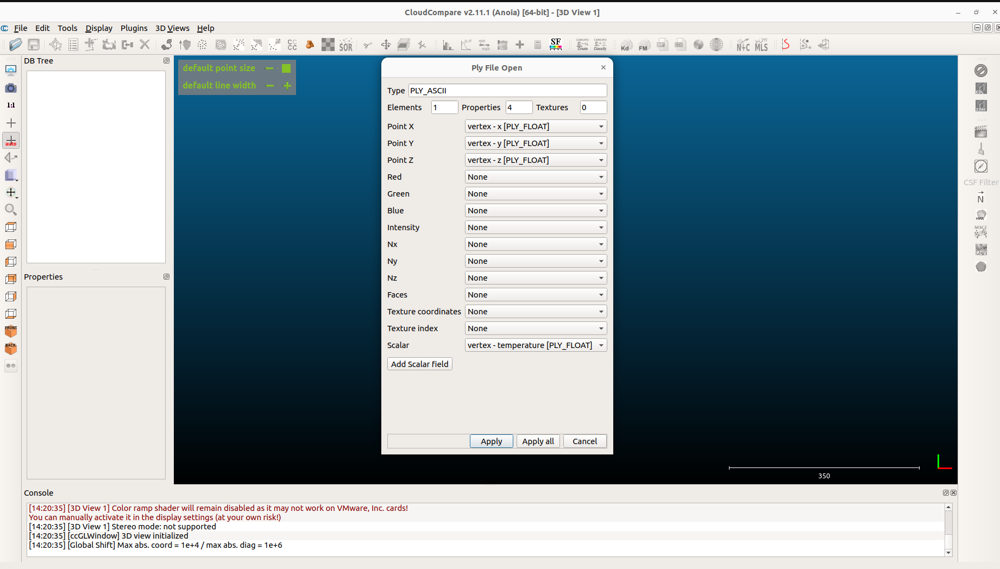
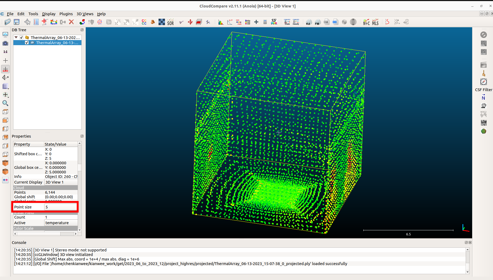

1. Simple Tutorial to Project high.RES Data to a 3D Space Using Python#
Install geomie3d python library. You will require Python >= 3.11 to use this library.
pip install geomie3d
Download the Python script and associated sample data from here (https://drive.google.com/file/d/1omuoNkQmcFojFIfAgtF4ROtJRYT39ZHX/view?usp=sharing).
Unzip the file and you will a folder structure like this.
project_highres | --- python | | | --- project.py | --- highres_sample_data | --- ThermalArray_06-13-2023_15-07-38_0.PLY --- ThermalArray_06-13-2023_15-10-07_0.PLY
Open the script python/project.py on any IDE. The script might not work on Jupyter Notebook as the visualization uses OpenGL. In this tutorial, Visual Studio Code is used (https://code.visualstudio.com/). To run the script fill in the parameters section of the script
The PARAMETERS section requires you to fill in all the necessary parameters for the script to run:
high_res_dir: the directory path of ‘highres_sample_data’.
room_size: the script generates a rectangular room for the projection. This specifies size of the room.
sensor_pos: the position of the high.RES sensor in the rectangular room.
viz: whether to visualize the procedure of the projection.
#================================================================================================================================= # region: PARAMETERS #================================================================================================================================= high_res_dir = '' room_size = [10,10,10] # xsize ysize zsize sensor_pos = [0, 0, 1.5] # xpos ypos zpos viz = True # endregion: PARAMETERS
You should be able to see the projected points.
ignore the following error messages if the viz parameter is set to True.
Attribute Qt::AA_ShareOpenGLContexts must be set before QCoreApplication is created
A folder called projected will be created at the project_highres folder. You will be able to see the projected .ply file using any 3D software that can read .ply files. In this case, CloudCompare (https://www.cloudcompare.org/) was used to visualized the projected .ply file.
When you open the .ply file in CloudCompare a dialog will appear. Choose temperature for the Scalar parameter as shown below.
Adjust the point size to clearly see the falsecolor of the points based on the temperature attributes.
If you open one of the .ply file in the projected folder in a text editor. The .ply format is relatively simple to understand.
the first 8 lines are the header explaining the schema of the file.
after the first 8 lines, each row is a point represented in 4 numbers. The x-position, y-position, z-position and the temperature attribute in degC.
you can further post-process this ply file for other analysis.
ply format ascii 1.0 element vertex 6144 property float x property float y property float z property float temperature end_header 4.999999799999999 4.999999799999999 5.91666649 22.6 4.6721309699999996 4.99999981 6.00819655 23.2 4.35483864 4.99999992 6.01612896 23.2 4.04761908 5.00000004 6.10317464 22.4
{kind=link}
{kind=link}
{kind=link}